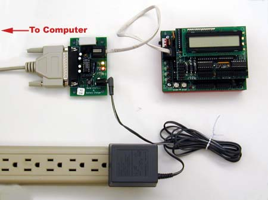
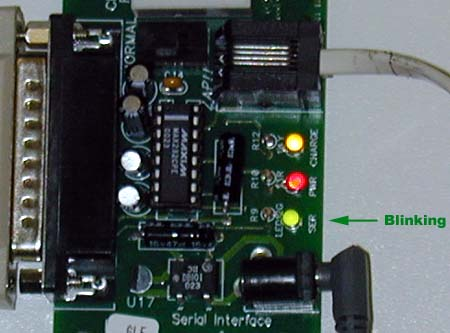
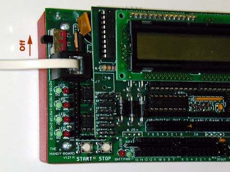
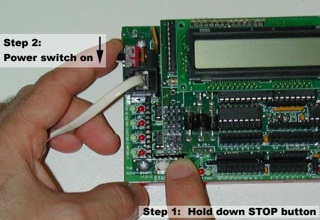
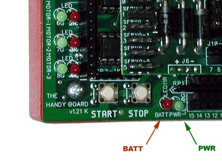

|
1. Connect the Handyboard to your computer, as shown in the picture below  |
|
2. Click on the "Communication Check" button and see if the serial light on the connection board blinks.  If it does not blink, there is probably either a problem with the serial connection, or the wrong serial port has been chosen. Hit the cancel button, check all serial connections, ensure that you've chosen the correct serial port, and try again. |
|
3.If the serial light blinked, you may move to the next step. Make sure the Handyboard is off.  |
|
4.While holding the STOP button, turn the power on. Keep the STOP button down for at least two seconds after power is on.  |
|
5.Both the RED BATT and GREEN PWR lights should be off (after shining momentarily). 
If both lights are off, hit the Download Firmware button to put the firmware on the board. |